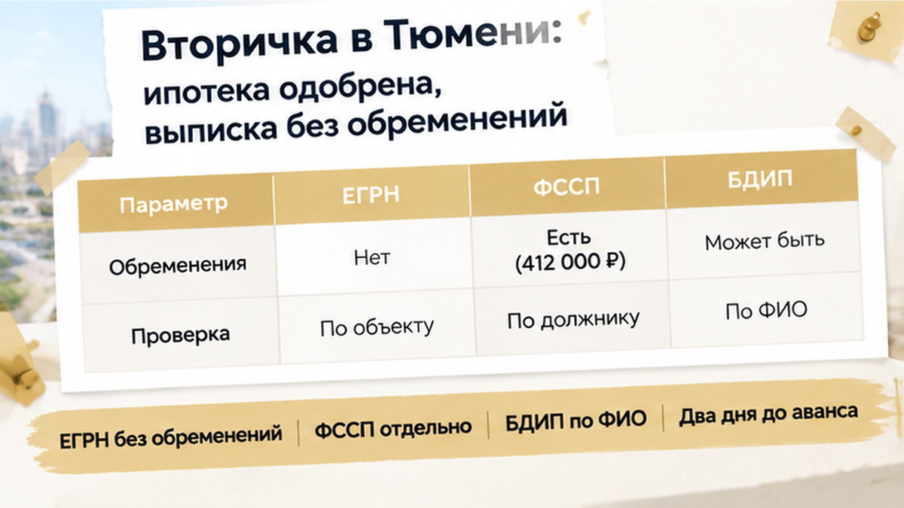
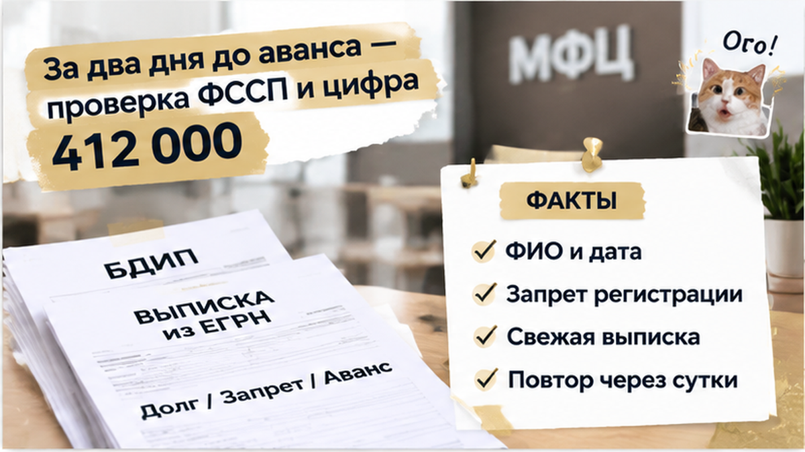
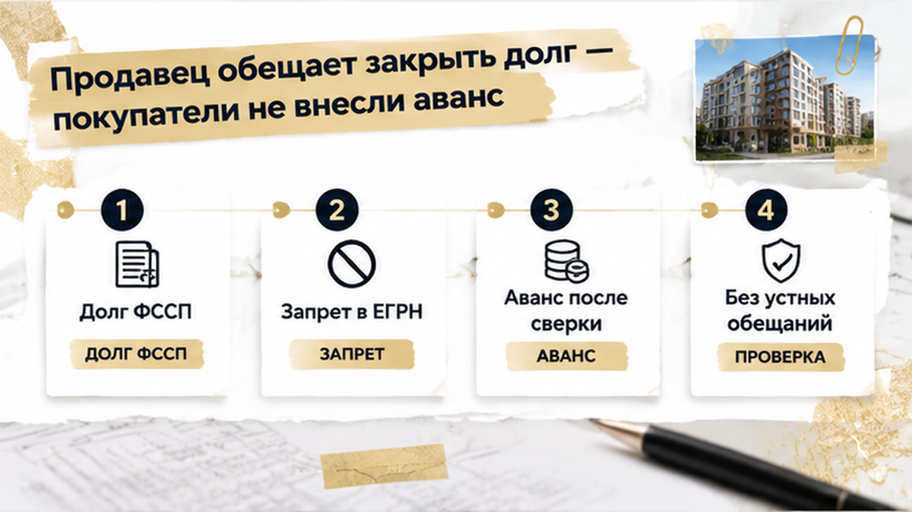
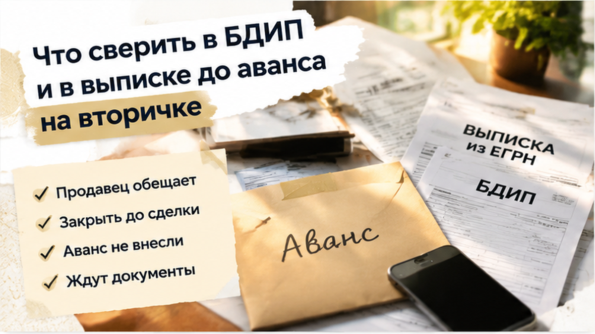
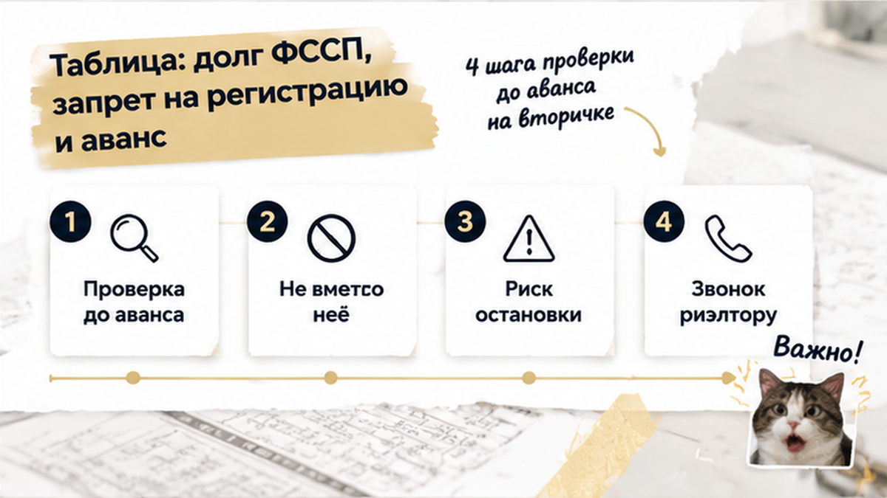

За два дня до аванса на тюменской вторичке покупатели нашли у продавца открытое производство ФССП на 412 тысяч рублей — и остановили сделку до передачи аванса. Ипотеку банк уже одобрил, выписка из ЕГРН показывала «ограничений нет», а продавец назвал день, когда ждёт деньги. Цифра всплыла вечером на кухне: муж от нечего делать вбил фамилию продавца в базу приставов, пока жена складывала документы в папку для сделки. Сначала оба решили, что это однофамилец, ведь фамилия ходовая, а квартира по бумагам без единого запрета. Потом совпали имя, отчество и дата рождения. Аванс они не внесли, хотя продавец обиделся и повторял, что «это вообще к квартире не относится».
Я Святослав Шакин, The Риэлтор, Тюмень. Разбираю вторичку до аванса, а не после перевода денег. Смотреть разборы и задать вопрос можно в Telegram и MAX.

До того вечера всё шло как в спокойной сделке на вторичке. Банк одобрил ипотеку, оценка прошла, продавец сам принёс свежую выписку из ЕГРН, и в графе ограничений там было пусто. Собственник один, квартира у него давно, детей в долях нет. Покупатели смотрели на стены, считали платёж, обсуждали, куда поставить диван. Про долги продавца не думали: мол, это его личное, к квартире не относится. Потом честно сказали мне, что расслабились именно на выписке: раз Росреестр молчит, значит, и бояться нечего.
Вот тут и ловушка. Выписка рассказывает про квартиру, а не про человека, который её продаёт. Долги продавца в ней не видны, пока пристав не запретит сделки именно с этой квартирой. Как бумага говорит одно, а жизнь другое, я уже показывал на истории, где ипотеку одобрили, а регистрацию отменили из-за одной строки в ЕГРН.

Базу долгов у приставов ведут открыто, это прямо разрешает закон. Любой может зайти на сайт ФССП, вбить фамилию, имя и регион и увидеть, взыскивают ли с человека деньги. Муж так и сделал. Выпала строка: производство открыто, остаток около 412 тысяч.
Первая мысль была нормальная, человеческая: «Да это не он». В Тюмени у распространённой фамилии запросто найдутся две-три строки чужих людей, и я не раз видел, как покупатели пугались чужого долга. Муж позвонил мне в тот же вечер, и мы сверили не фамилию, а дату рождения из базы с паспортом, который продавец показывал на встрече. Совпало всё. Однофамилец отпал, долг был его, и сумма совсем не копеечная.
412 тысяч — это не «мелочь, закроем с аванса». Для семьи с ипотекой это несколько месяцев платежа и нервов. Покупатели уже прикидывали, когда вносить аванс и когда выходить на сделку в банке. После вечернего звонка эти планы встали на стоп — не потому что квартира плохая, а потому что риск появился в другой базе, которую выписка не показывает.
Долг у пристава и квартира в ЕГРН живут в разных базах. Открытое производство ещё не значит, что арестована именно эта квартира: пристав может взыскивать с зарплаты, со счёта, с машины. Поэтому в выписке пусто, и она честно показывает то, что внесено в реестр на дату заказа. Что пристав сделает завтра, выписка не знает. А он вправе в любой день поставить запрет на регистрационные действия, и тогда Росреестр по 218-ФЗ просто не зарегистрирует переход права. Для покупателя это выглядит так: деньги отданы, документы поданы, регистрацию остановили, квартира и аванс у продавца, а у вас расписка.
Тут же путаются с новостями. В сентябре тюменское управление ФССП напоминало проверять долги перед поездками, потому что запрет на выезд за границу ставят уже при долге больше 10 тысяч. Это про самого человека, а не про квартиру. Продавец, который спокойно летает в отпуск, ничего не доказывает про свою двушку.

На следующий день покупатели позвонили продавцу прямо. Он не отпирался: да, долг есть, «закрою за день, квартира-то чистая, посмотрите выписку». И предложил схему: вы вносите аванс, я из него гашу долг, и все довольны. Звучит по-человечески, пока не прикинешь, что между авансом и регистрацией проходит неделя, а база приставов обновляется 3–7 дней.
Я сказал прямо: сначала долг гасится и это подтверждается постановлением пристава, потом аванс. Слова «я всё оплатил» без строки в БДИП напоминают историю, где продавец показал справку о закрытии ипотеки, а банк всё ещё держал залог. Вечером покупатели сообщили: аванса не будет, пока производство открыто. Продавец обиделся, ипотека и дата сделки встали на паузу — но это пауза, а не 412 тысяч между ними и регистрацией. Похожий стоп перед авансом был, когда не подтвердили согласие супруги, и в другой сделке — когда перед авансом всплыла доля умершей жены.
ФССП 412 тысяч за два дня до аванса при «чистой» выписке: вы бы внесли аванс под обещание «закрою за день» или сразу отказались?
Если вы на этапе просмотров, а не подписания, подпишитесь: в Telegram и MAX я выкладываю проверки продавца и выписки до аванса на вторичке в Тюмени.

Проверять нужно каждого собственника, а не только того, кто с вами разговаривает. Откройте базу исполнительных производств на сайте ФССП и вбейте фамилию, имя, отчество и регион. Если нашлась строка, сверьте дату рождения с паспортом. Совпала только фамилия, а дата другая? Скорее всего, это однофамилец, и пугаться рано. Если совпало всё, смотрите сумму, основание и дату, когда открыли производство.
Выписку из ЕГРН заказывайте свежую, накануне подачи документов. Выписка месячной давности показывает только то, что было месяц назад. Если продавец говорит «уже оплатил», попросите квитанцию и постановление пристава об окончании производства. Аванс переносите на день, когда запись из базы пропадёт. Обычно это 3–7 дней, и подождать их дешевле, чем потом разбираться с запретом.
Получается, покупатели отдали бы деньги человеку, у которого в любой момент могут заблокировать ту самую квартиру. Даже если продавец честно гасит долг, база приставов обновляется не мгновенно, обычно от трёх до семи дней. Всё это время покупатели жили бы с вопросом, успеет ли запрет появиться раньше регистрации, и правильно отказались от аванса под давлением «подпишем сегодня».
Для покупателя это выглядит так: деньги отданы, документы поданы, а регистрацию приостанавливают. Квартира остаётся у продавца, аванс у продавца, а у вас на руках только расписка и одобренная ипотека, которую некуда применить. Похожую историю «бумага чистая, а реальность другая» я разбирал в статье про ипотеку одобрили, а регистрацию отменили из-за одной строки в ЕГРН.
В соглашении об авансе я прошу прописать простое условие: деньги возвращаются, если у продавца всплывают долги у приставов или в выписке появляется запрет на регистрацию. Без этой строчки вы остаётесь с распиской и надеждой на честность. На вторичке в Тюмени это не паранойя, а рабочий порядок — как пакет по ЖКУ или согласие супруги до перевода суммы.

| Что видите | Что это значит для квартиры | Что делать с авансом |
|---|---|---|
| Открытое производство в БДИП, выписка ЕГРН чистая | Запрета пока нет, но пристав может поставить его в любой день | Не вносить, пока закрытие долга не подтверждено документами |
| В выписке ЕГРН есть запрет на регистрационные действия | Переход права не зарегистрируют | Не вносить. Сначала снимают запрет, потом заказывают новую выписку |
| Продавец оплатил долг вчера, в базе он ещё висит | База обновляется 3–7 дней | Взять квитанцию и постановление об окончании, дождаться обновления |
| Совпала фамилия, но не дата рождения | Скорее всего, однофамилец | Сверить паспортные данные и только потом решать |
| У продавца запрет выезда за границу | Сам по себе квартиру не блокирует | Проверить, нет ли отдельного запрета на регистрацию |
В этой истории деньги остались у покупателей только потому, что базу приставов открыли за два дня до аванса, а не через два дня после. Сделку поставили на паузу, а не похоронили. Ипотека была одобрена, выписка чистая, продавец приятный — и всё равно правильным решением оказалось подождать, пока долг исчезнет из БДИП или пока вы не убедитесь, что риск контролируем.
Вторичку в Тюмени покупать можно и нужно. Просто аванс отдают после проверки продавца, а не вместо неё. Я веду такие сделки лично: от первого звонка до регистрации, без передачи «юристу в офисе». Сначала смотрю собственников в БДИП, потом свежую выписку, потом текст аванса — и только после этого обсуждаем дату в банке. Если продавец торопит «подпишем сегодня, пока не передумали», это не повод пропускать проверку: как раз наоборот.
Если квартира уже выбрана и на этой неделе вы собираетесь передавать деньги, подключите меня до аванса. Проверить продавца, БДИП и ограничения за день-два спокойнее, чем потом месяцами возвращать своё или спорить с приставом уже после регистрации.